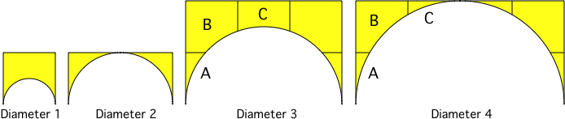

Blocks are provided for building arches ranging from 1 to 4 blocks in
diameter. The following diagram shows the various arch parts and how
they fit together.

Placing Arch Blocks
Arch blocks behave slightly differently from other ArchitectureCraft
blocks during placement. They are designed to appear right-side-up when
placed by clicking near the top
of an adjacent block or underside of a block above. The following
example shows one way of building the left half of a diameter-4 arch.